Tyniy compresses your photos and videos so they look the same as the originals but take up a fraction of the space. Free up storage right in your photo library, without deleting a single memory.
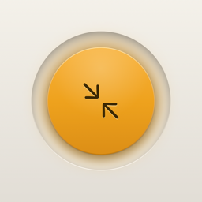
Download on the App StoreTyniy for iPhone & iPad Download on the Mac App StoreTyniy for Mac100% free. No ads, no subscriptions, no limits. Everything happens on your device.
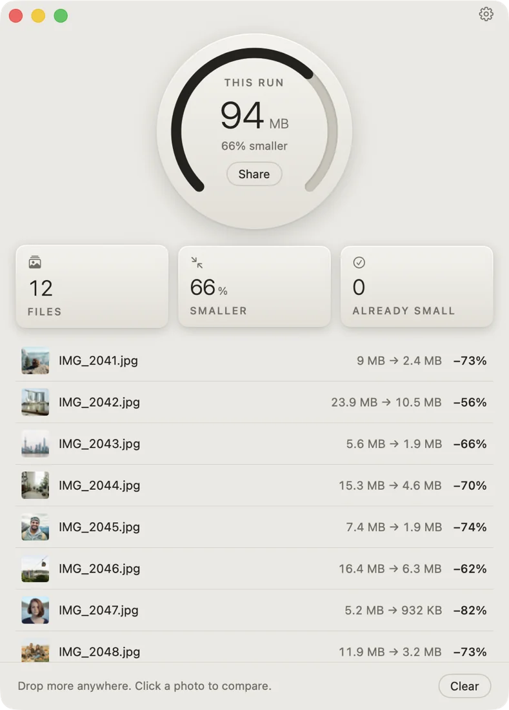
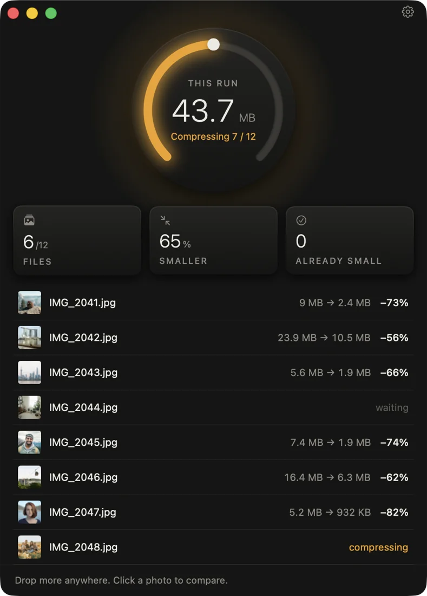
A 100% crop of a 24-megapixel photo before and after Tyniy. Drag the divider.
Whole-file sizes. For this page both crops were saved the same way, at high JPEG quality. Photo: Unsplash.
One dial, three readouts and your files. Inspired by classic camera design, in light and dark.
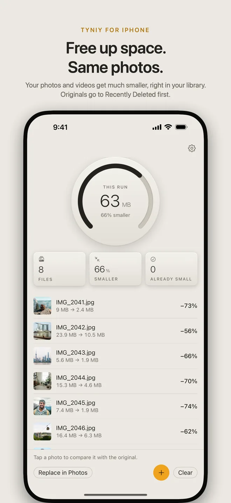
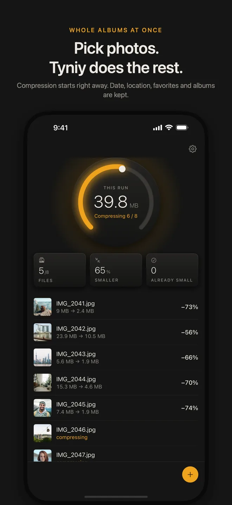
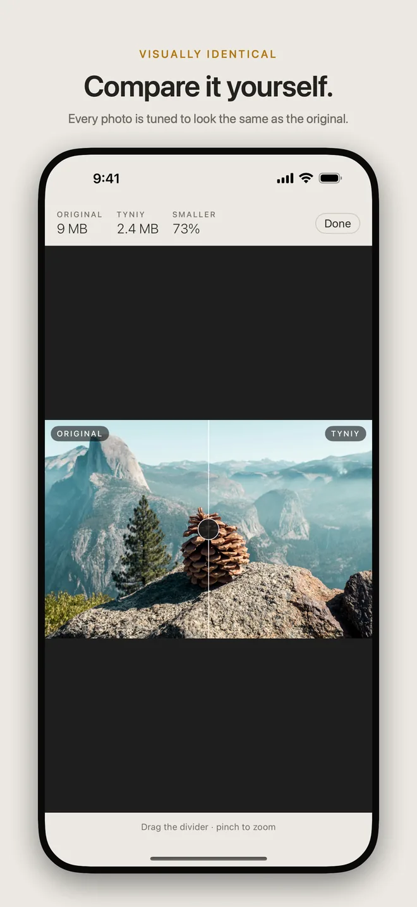
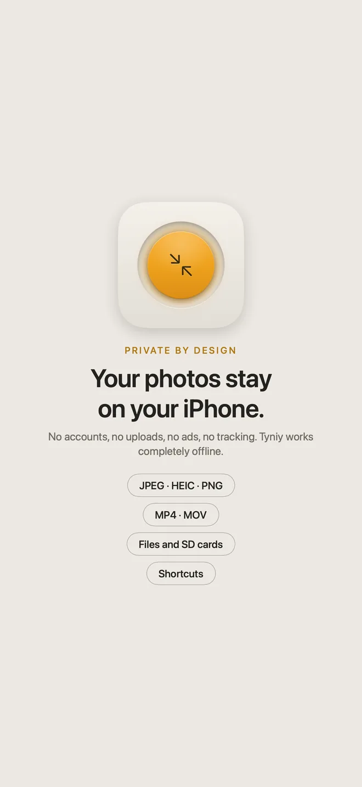
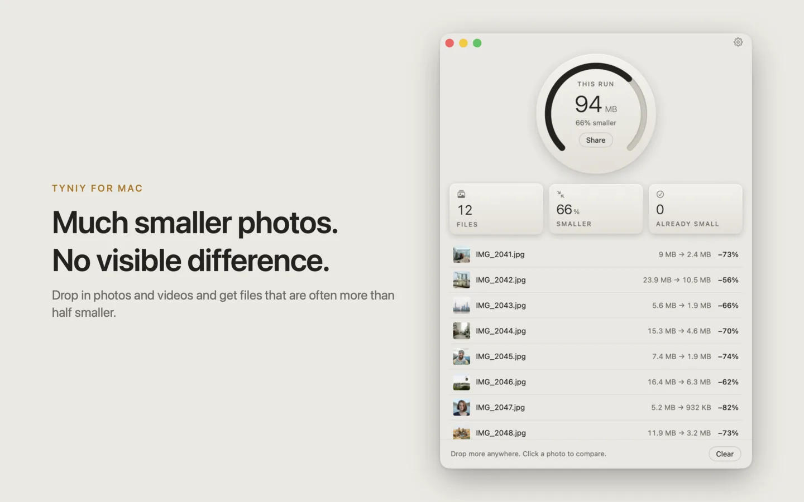
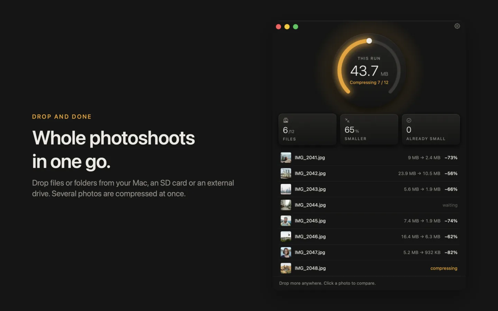
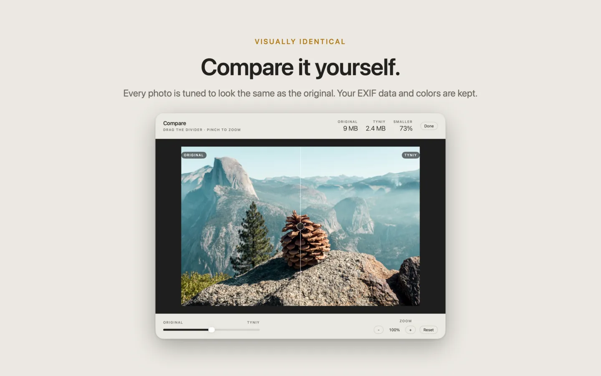
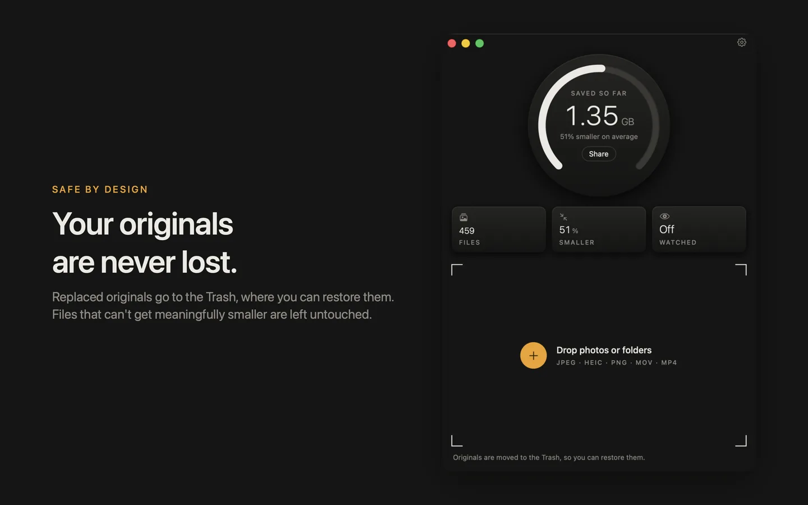
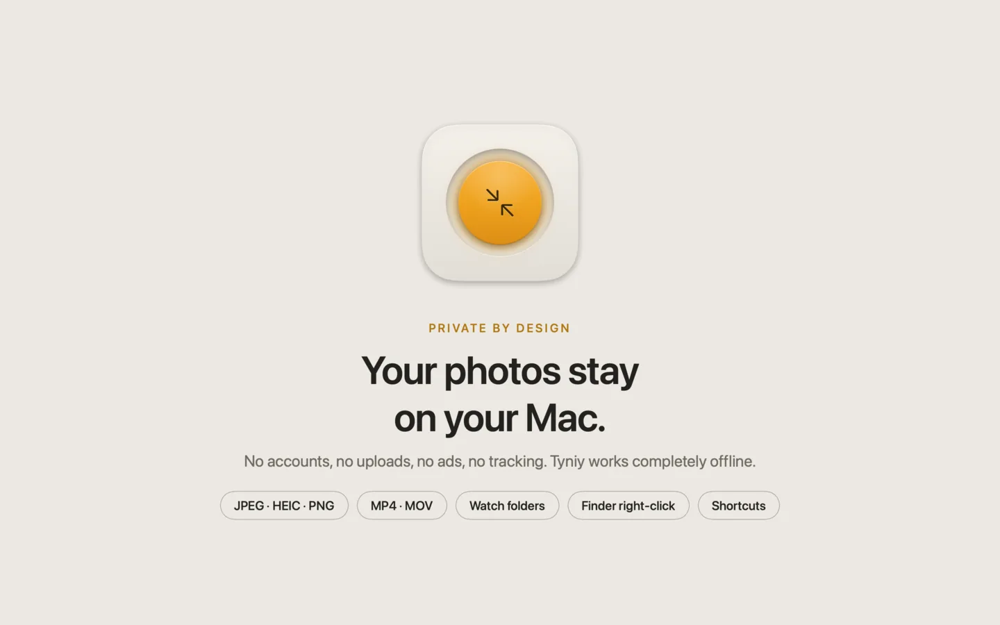
Tyniy works out how much each photo can be compressed without a visible change, so you don't have to.
Pick photos and videos on iPhone and iPad, or scan your library to see where the space is. On the Mac, drop files and folders or open your Photos library.
Compression starts right away, several photos at once. Every result is checked, and files that can't get meaningfully smaller are left exactly as they are.
The smaller files take the originals' place, with the same date, location and albums. Originals go to Recently Deleted or the Trash, where you can restore them.
Tyniy scans your library and shows how much each kind of photo and video could free, then compresses them with one tap.
Photos are encoded with jpegli, a modern JPEG encoder that targets what the human eye can actually see.
An HEVC encoder tries several quality steps for each clip and keeps the smallest result that still looks the same.
The photo and its motion are compressed together and checked as a pair before anything is replaced.
Replaced originals go to Recently Deleted in Photos or the Trash on the Mac. On an SD card, Tyniy asks before overwriting.
Camera, lens, date, GPS, orientation and color profiles carry over, so Display P3 and HDR photos keep their colors.
Screenshots shrink a lot while staying sharp. Optionally convert photos to WebP or AVIF for websites.
Compress new files in folders like Downloads automatically, right-click in Finder, or use the "Compress Files" action.
No accounts, no uploads, no analytics. Tyniy works completely offline.
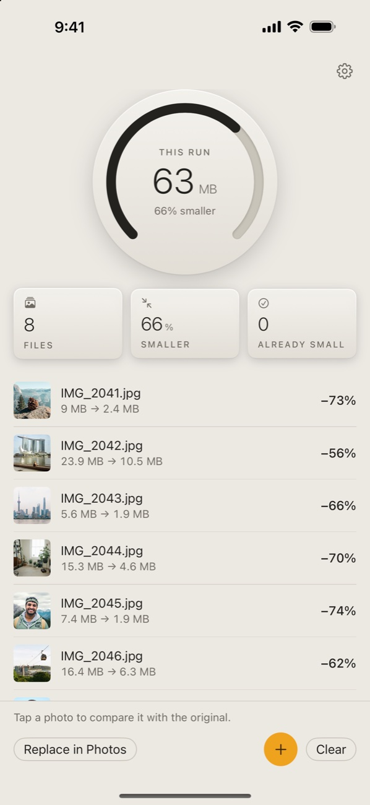
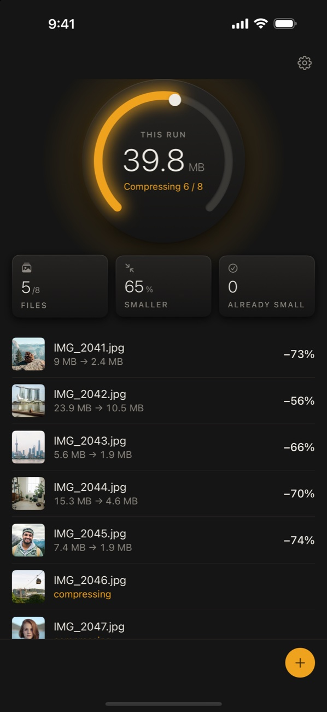
Pick photos and videos, or let Tyniy find what can get smaller. The smaller versions go back into your library with their original date, location, favorites and albums.
Drop files or folders from your Mac, an SD card or an external drive, or compress right in your Photos library. Tens of thousands of files are no problem.
App Store review, United States“Too good to be free!”
“It compresses your photos, and so far I find no perceptible quality loss. I’ve been using JPEGMini for years …”
Connect your camera's SD card to your iPhone or iPad with a card reader. Tyniy compresses the photos straight from the card, so only the smaller files end up in your library, your laptop or your cloud.
Use any USB-C or Lightning SD card reader. The card shows up in the Files app, with no import needed.
In Tyniy, tap Choose from Files and pick photos or the whole DCIM folder. Tyniy compresses them right away.
Tap Save to Files, then Replace Originals. The smaller files take the originals' place on the card, ready to import.
A card has no Recently Deleted, so Tyniy asks before overwriting anything. Prefer to keep the originals? Save the smaller files to another folder instead. Works with JPEG, HEIC, PNG, MP4 and MOV, and with external SSDs and USB drives too.
Both shrink photos without visible loss. Here's how they differ.
| Tyniy | JPEGmini | |
|---|---|---|
| Price | Free, no limits | From $59 one-time; free tier limited to 50 images a day |
| Platforms | Mac, iPhone and iPad | Mac and Windows |
| Photo formats | JPEG, HEIC and PNG | JPEG and HEIC |
| Output for websites | WebP and AVIF | JPEG |
| Videos | Included | Pro edition ($59) and up |
| Watch folders | Included (Mac) | Pro + Automations edition ($99) |
| On-device | Yes | Yes |
JPEGmini is a trademark of its owner. Based on jpegmini.com/pricing, October 2026.
Install Tyniy, tap + and pick photos and videos, or scan your library to see what can get smaller. Tyniy compresses each photo only as far as it can without a visible change, then puts the smaller version in your library with its date, location, favorites and albums. iOS asks you to confirm before anything is replaced.
Yes. Replaced originals go to Recently Deleted in Photos on iPhone and iPad, and to the Trash on the Mac, where you can restore them until they're emptied. Files on an SD card or a drive connected to an iPhone or iPad are overwritten in place, so Tyniy asks first, and you can save to another folder instead.
Tyniy leaves a file untouched when it can't be made meaningfully smaller. Photos taken with a recent iPhone in HEIC are often already efficient. Older JPEGs, photos from cameras, screenshots and videos usually shrink the most.
Yes. Videos are compressed with HEVC, trying several quality steps per clip and keeping the smallest result that still looks the same. Live Photos are compressed together with their motion and stay Live Photos.
Yes. Tyniy is free on iPhone, iPad and Mac, with no ads, no subscriptions, no in-app purchases and no limits.
No. Tyniy compresses everything on your device and makes no network connections. There are no accounts, no analytics and no tracking. See the privacy policy.
Yes. Like JPEGmini, Tyniy shrinks photos without visible loss, but it's free without daily limits, runs on iPhone and iPad as well as the Mac, and includes PNG, video, WebP and AVIF output and watch folders. See the comparison.
Free, private and simple. On iPhone, iPad and Mac.